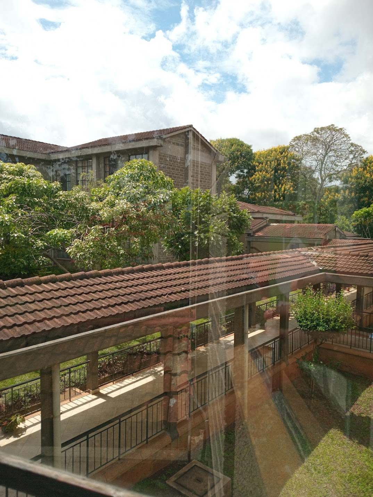
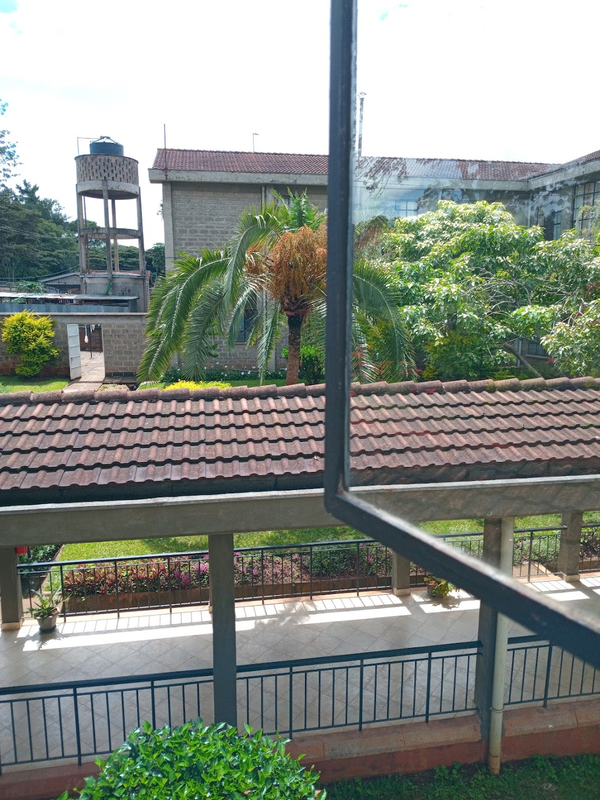
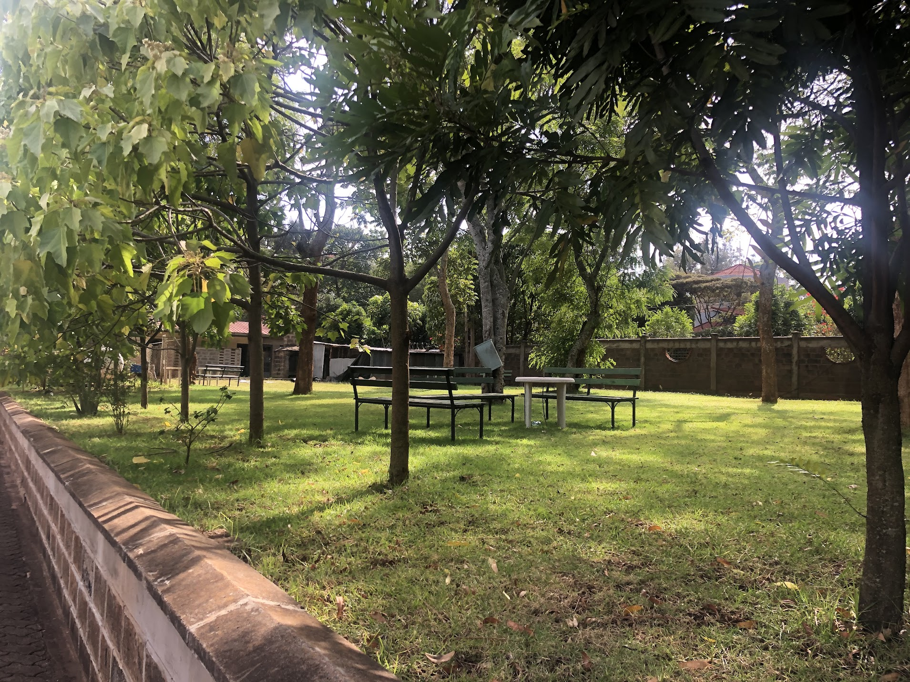
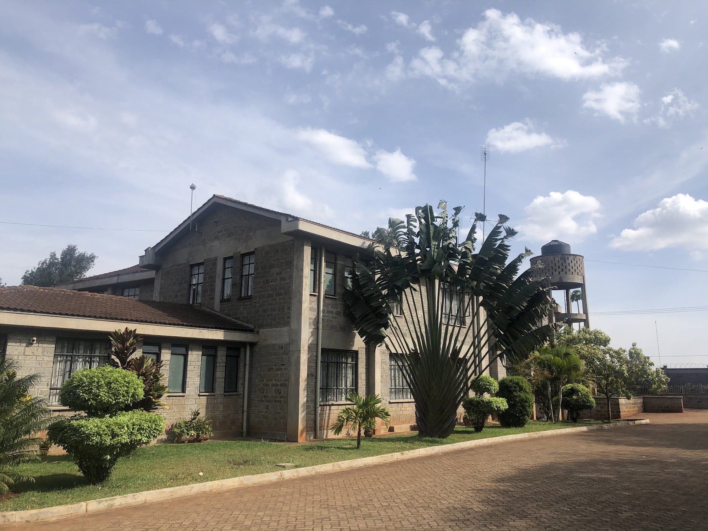
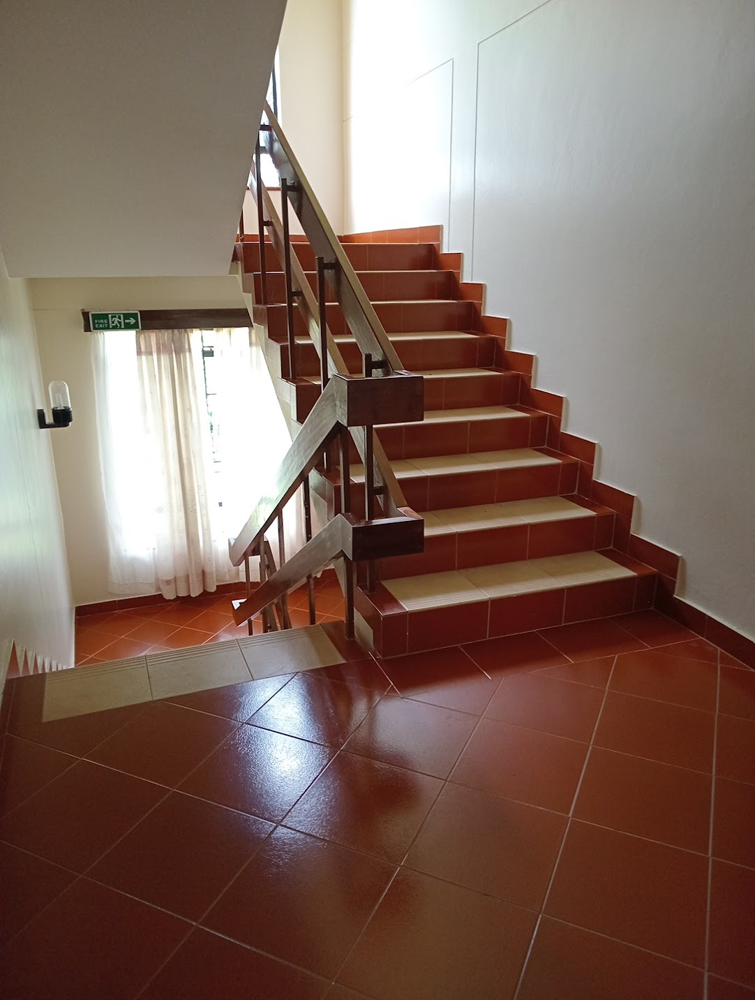

We are a prayer facility belonging to Archdiocese of Nairobi. It is situated within the prayer grounds of the Ressurection Garden. An initiative of the servant of God Maurice Michael Cardinal Otunga. People of all faith flow to the Ressurection Garden, to seek God, be spiritually nourished & renewed through silence, reflection and prayer. Among the many chapels there is dedicated to the servant of God Maurice Michael Cardinal Otunga, where the remains of his body lie.

We offer facilities for retreats, seminars, workshops, team-building activities, and conferences.

Barrier-Free Access: All rooms and workshop spaces are accessible to everyone.

We offer a wide variety of facilities suitable for hosting individual / group seminars, recollection days etc

The multipurpose conference hall can accommodate up to 300 participants, with additional breakout rooms for smaller meetings.

Leadership camps often focus on equipping, mentoring, and strengthening volunteers and staff, covering areas from spiritual growth to practical ministry management.
Booking can be made in person, by telephone, mail or email, preferably one month before ones intended to stay, to secure yourself a place. A non-refundable deposit of 30% should be paid to confirm your booking, and the balance to be cleared on arrival. Payments are done by closed cheques payable to St Mary Magdalene Retreat House or through paybill No. 488509(No Cash or Personal Cheques.) Visitors are booked in from 8:00am to 6:00pm. In case of any change on your booking, kindly inform the retreat office early enough.
Book Now